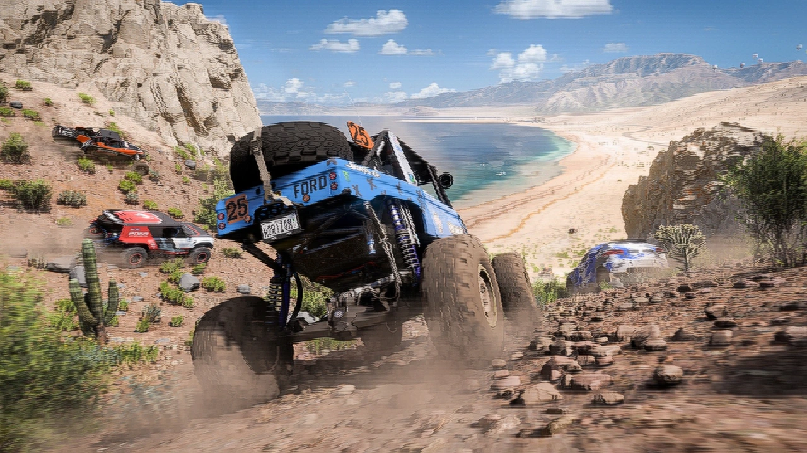
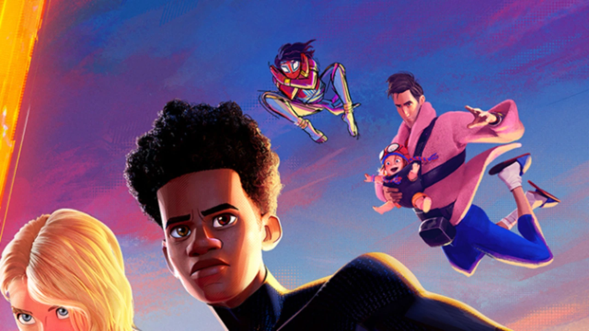
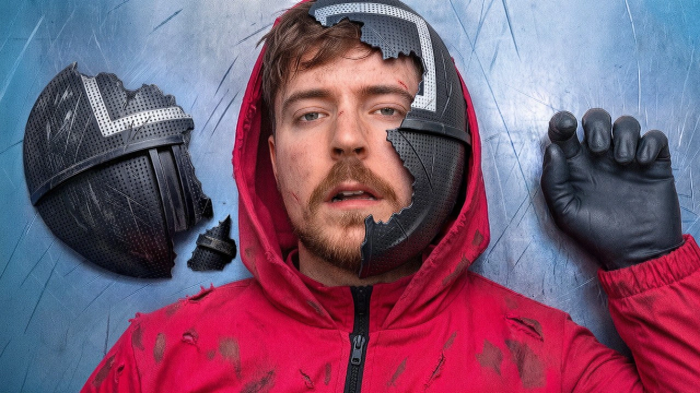
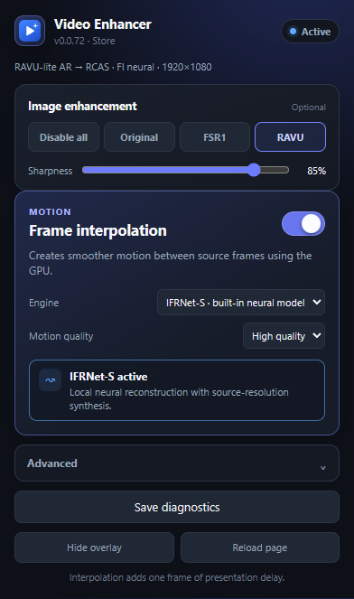

30→60
FPS · Give everyday video a smoother rhythm.
THE BROWSER VIDEO UPGRADE
Sharper detail. Smoother motion. Upscale the videos you love, then push playback up to twice the frame rate. All in your browser.
No account. No cloud processing. No subscriptions.
Using Chrome or Edge? Get the Chromium package ↗01 / MORE PICTURE
Don't let a soft picture fill your screen. Adaptive upscaling and contrast-aware sharpening bring edges and textures into focus, from your next movie trailer to your favorite gameplay.

02 / MORE MOTION
Neural interpolation creates new frames between the originals. Camera pans, races and fast action can feel more fluid — directly in your browser.
FPS · Give everyday video a smoother rhythm.
FPS · Put your high-refresh display to work.
Maximum output depends on the source, GPU and browser. A compatible high-refresh display is needed to see 120 FPS.
THE VIDEOS YOU ALREADY LOVE
Movies. Creators. Gameplay. Pick a sample and move the slider to compare the same image before and after the extension's image processing.

Same 360p demo sample → 720p output. Actual released shaders. No added blur.
View source media ↗Public promotional images and video previews are used to illustrate image processing. Featured creators, studios and game publishers are not affiliated with or endorsing Video Enhancer. Media credits.
SHORT VIDEO. BIG UPGRADE.
Not every video needs a big screen. Give the next clip in your feed a sharper picture, too.

Shorts03 / LESS SETUP
The controls you need are a click away. Choose your image mode, adjust sharpness and turn on frame interpolation when you want more fluid motion.
Free on Firefox. Chromium packages are available on GitHub.
Start with FSR1 or RAVU-lite, then dial in the sharpness.
Enable neural interpolation. The model is already included.

PRIVATE BY DESIGN
Your browser and GPU do the work. No video uploads, no telemetry, no account to create.
A FEW QUICK ANSWERS
Interpolation can add one new frame between each pair of originals, for up to 2× output. Your video, browser and GPU determine how many frames finish in time. To see 120 FPS, you also need a display and browser refresh rate that support it.
No. The Firefox Add-ons version includes IFRNet-S. Install the extension, open its controls and enable interpolation.
Video Enhancer processes compatible HTML5 video players. Protected or otherwise restricted video may not allow processing. It enhances video playback in your browser, not a game's own rendering.
Upscaling improves how a lower-resolution picture looks when enlarged. It doesn't recreate all the detail of a native 4K recording. FSR1, RAVU-lite and RCAS help make the most of the image you have.
YOUR BROWSER CAN DO MORE
Sharper detail. Smoother motion. Start with one free extension.
Chromium packages are installed manually. No Chrome Web Store listing yet.